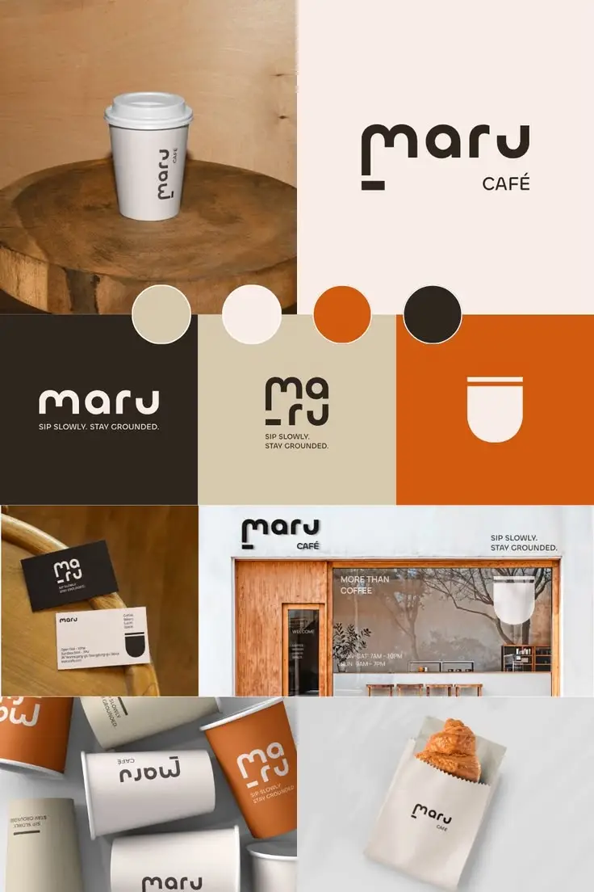
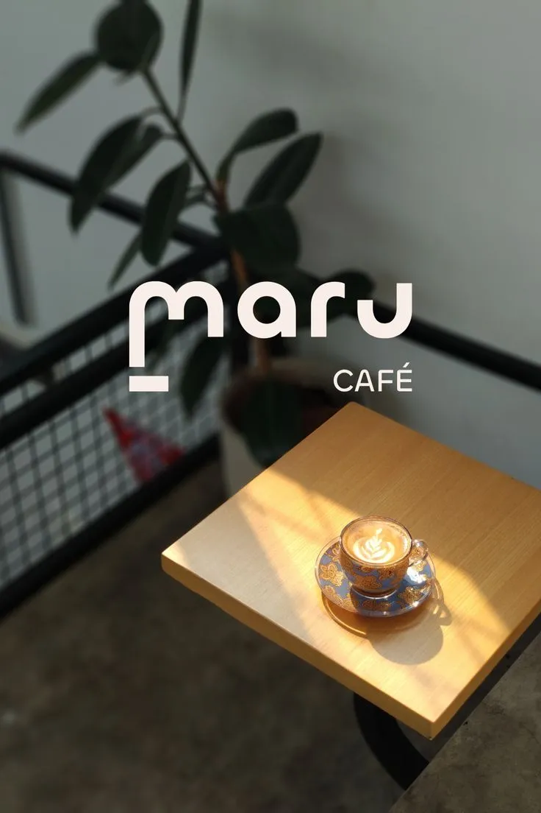
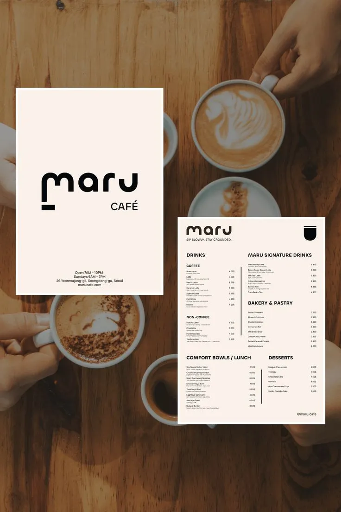
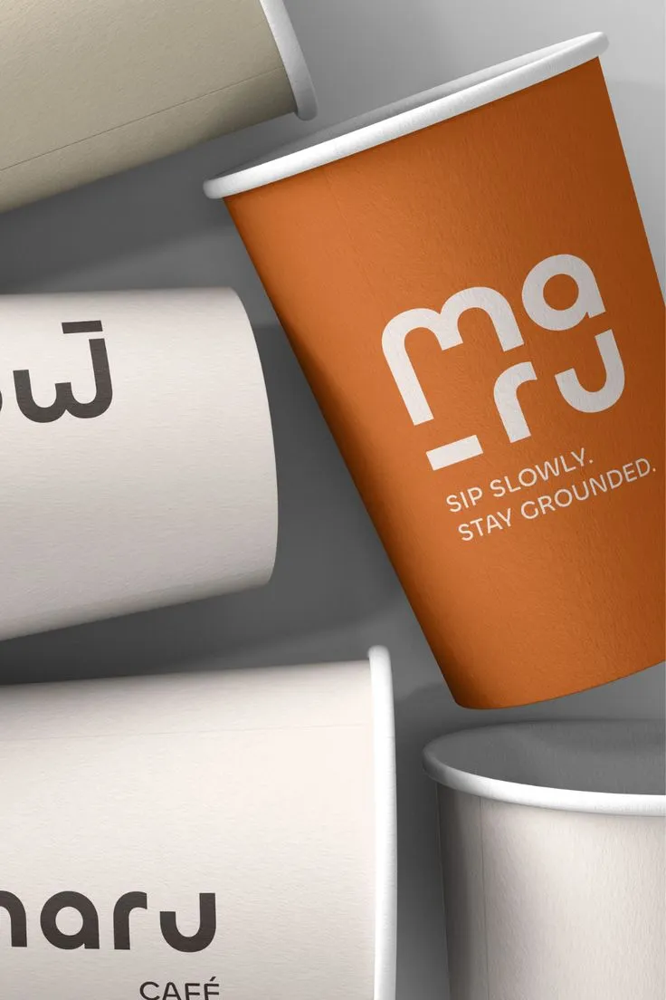
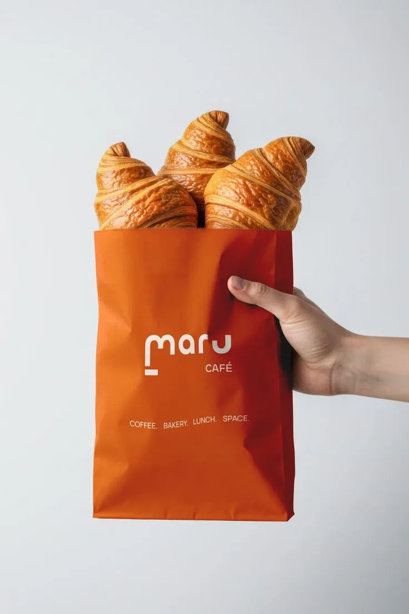

About the brand
Maru needed a sharper identity that could communicate professionalism without feeling heavy or overdesigned.
The brief was to shape a brand system that felt modern, memorable, and easy to apply across digital and print touchpoints.
My role
Brand designer
Deliverables
Identity direction, layout, poster system
Focus
Consistency, clarity, recognition
Visual Direction.
These images from the Maru folder show the identity in different compositions and application styles.





My role
What I handled
I developed the visual direction, balanced the typography, refined the hierarchy, and shaped the presentation style so the brand felt intentional and consistent.
The solution
What solved the brief
A compact identity system with strong contrast, cleaner spacing, and reusable compositions that work across posts, posters, and brand touchpoints.
The benefits
What it gives the brand
Maru now has a clearer visual presence, stronger recognition, and an adaptable system that can stay consistent as the brand grows.